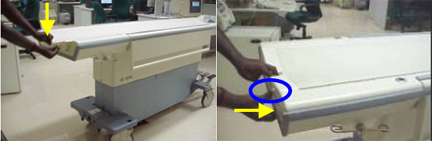
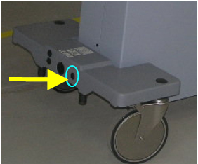
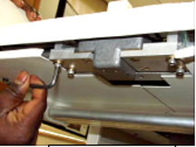
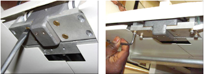
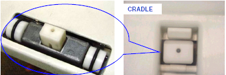

Operating Documentation
Direction 5133330-3, Rev# 14
Signa EXCITE HD 3.0T Service Methods
Module Version 3.0, Version Date 9/28/09
Operating Documentation |
| Required Persons | Preliminary Reqs | Procedure | Finalization |
|---|---|---|---|
| 2 |
This procedure provides the instructions for the Cradle Release from the Transport Tension adjustment and the Front Guide Roller Height adjustment on the patient table.
| Item | Qty | Effectivity | Part# | Manufacturer | |
|---|---|---|---|---|---|
| Standard Screwdriver | 1 | - | - | - | |
| 3/32 in. Allen Key | 1 | - | - | - | |
| 5/32 in. Allen Wrench | 1 | - | - | - | |
| Socket Extension, Nut Driver | 1 | - | - | - | |
| Item | Qty | Effectivity | Part# | Manufacturer |
|---|---|---|---|---|
| Shims | Amount Needed | - | 46-317181P1 | - |
| ||||
| Personal Injury! | ||||
| Table height is adjustable. | ||||
| Make sure the safety lock bar is in place before servicing the Patient table. Do not load the table while servicing. |
Make sure the cradle is positioned on the Table.
Remove the Table from the Scan Room to perform the rest of this service procedure.
Press the cradle release pin and front Delrin stopper shown in Illustration 1.
Illustration 1: Location of Cradle Release Pin and Delrin Stopper

Pull the cradle out. (The cradle will come approximately 50 mm away from the tabletop front; done to make sure the cradle is clear of the flipper actuation. See Illustration 2.)
Illustration 2: Cradle Cleared of Flipper Actuation

Press the Up Limit Indicator Bumper to release the central pin shown in Illustration 3.
Illustration 3: Up Limit Indicator Bumper

Pull the cradle out and remove it from the Table. (See Illustration 4.)
Illustration 4: Removing Cradle from Table

Once the cradle is removed from the table, place the cradle on a surface where further adjustments can be performed. (See Illustration 5.)
Illustration 5: Setting Cradle Aside

| ||||
| Two people are required to conduct this check. | ||||
Twist the handle fully to extend the Release Bar/Ramp as shown inIllustration 6, and hold it in the extended position.
Illustration 6: Emergency Cradle Release

Refer to Illustration 7. Using a socket extension, nut driver or similar tool, push the Release Bar/Ramp shown in Illustration 8 with approximately 10 to 20 lbs. of force (Force Gauge, 5142800 or 5142800-2).
Observe the movement of the release ramp. A properly adjusted release ramp will exhibit some spring, and return to its original position when released.
Illustration 7: Pushing Release Bar/Ramp

Illustration 8: Location of Release Bar/Ramp

If the Release Bar/Ramp fails to return to its original position and moves more than approximately 1.5 mm (0.06 in.), refer to Illustration 9and adjust the release mechanism tension according to the instructions in Tension Adjustment of Cradle Release Mechanism .
Illustration 9: Failure Example

Turn the cradle over to access the Kevlar cord shown in Illustration 10.
Illustration 10: Location of Kevlar Cord

Remove the knot in the Kevlar cord (shown in Illustration 11) with the assistance of the 3/32 in. Allen Wrench.
Illustration 11: Removing Knot in Kevlar Cord

Using the 3/32 inch Allen Wrench, loosen the grub screw as shown in Illustration 12.
Illustration 12: Loosening Grub Screw

Pull the Kevlar cord in the direction of the blue arrow shown in Illustration 13to apply the necessary tension required to butt the Release Bar/Ramp against the cradle front section. See Illustration 14.
Illustration 13: Applying Tension on Kevlar Cord

Illustration 14: Release Bar/Ramp Against Cradle Front

| ||||
| When securing the tension on the Kevlar cord, make sure the
grub screw is on the rivet and NOT on the Kevlar cord. The cord must
be beneath the rivet when tightening the grub screw as shown in Illustration 15. Illustration 15: Tightening Grub Screw | ||||
Refer to Illustration 16.
Once the Release Bar/Ramp has the appropriate tension applied, tighten the grub screw to secure the tension on the cord.
Illustration 16: Securing Kevlar Cord

Tie a knot with the loose end of the Kevlar cord as shown above.
If the height of the Front Guide Rollers requires adjustment, proceed to Front Guide Rollers Height Adjustment. If not, proceed to Finalization, Step 1.
If the Front Guide Rollers require a height adjustment, shims need to be added or removed. The Shim part number is 46-317181P1. Order additional shims if the height is to be raised. The Shims are 0.35 of an inch wide.
If the cradle is not already removed from the table top, follow Step 2, then proceed to Cradle Position During Release Mechanism Adjustment, Step 1.
The Front Guide Rollers should be 0.25 inches above the cradle wheel tracks as shown in Illustration 17. In there is any variation, follow the next steps in the adjustment process.
Illustration 17: Front Roller Guide Height

To readjust the height of the rollers, the latch assembly Holding Blocks must be removed. (See Illustration 18.)
Illustration 18: Location of Holding Blocks

Using the 5/32 Allen Wrench, loosen the Allen screws while holding the block. (See Illustration 19.)
Illustration 19: Removing Allen Screws

Using the standard screwdriver, remove the screws from the holding block as shown in Illustration 20.
Illustration 20: Removing Holding Block Screws

Remove the Holding Blocks from the latch assembly.
Add or remove shims so the O-rings are at the correct height of 0.25 inches (6.35 mm) above the horizontal wheel track on either side. (See Illustration 21.)
Illustration 21: Adding/Removing Shims

Refer to Illustration 22. Once the appropriate height is achieved, install the Holding Bocks:
Using the standard screwdriver, loosely secure the screws on both holding blocks.
Use the 5/32 Allen Wrench to loosely secure the Allen screws on both holding blocks.
Illustration 22: Installing Holding Blocks

Before securing the holding blocks in place, make sure the latch is centered in the slot of the cradle as shown in Illustration 23.
Illustration 23: Front Latch Position

Check the front latch height before securing the holding blocks:
Return the cradle to the table top.
With the casting in the docked position, make sure the Delrin stopper is flush and the latch is projected 2 mm from the casting.
Once the latch is at the proper height, secure the screws holding the holding blocks.
Re-assemble the cradle by placing the cradle in its position on the table top.
Connect the table to the scanner.
Move the cradle into the bore of the scanner and then return to its normal position to make sure the cradle is properly placed on the table top.
Perform an emergency cradle release by twisting the handle to release it.
If it does not release, adjust the tension again.
If the cradle release functions properly, proceed to Step 5.
Re-engage the cradle to its functioning position.